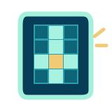

Complete a grade usando as pistas.
Clique em uma casa ou em uma pista para começar.
Escolha uma pista ou uma casa da grade. Digite as letras usando seu teclado. Use Backspace para apagar e as setas para navegar. Clique novamente na mesma casa para alternar a orientação.
Os números mostram onde cada palavra começa. Use as pistas para completar todas as palavras. O progresso é salvo automaticamente no navegador.